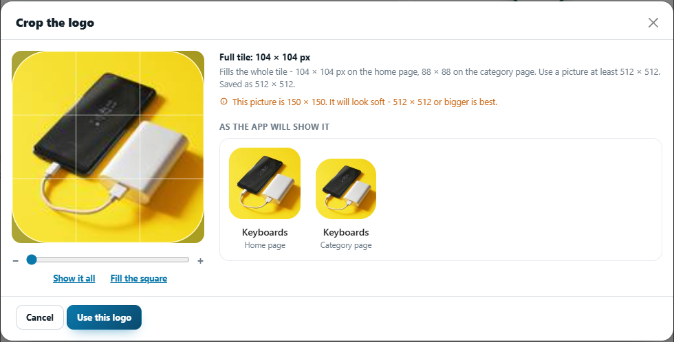

369 Mart is the base of the whole suite. On its own it shows very little: it puts the 369 Mart menu on the main menu, keeps a few shared settings that every other 369 Mart part reads, and supplies the common pieces the other screens are built from, such as the logo picker used for categories.
Every other 369 Mart module needs this one, and each can be added or removed on its own. Because everything hangs off it, removing 369 Mart removes the whole suite.
| Word | What it means |
|---|---|
| Heading | One of the six groups along the top of the 369 Mart menu, such as Store or Sales. |
| Shared settings | One record of settings that all 369 Mart parts read, named "369 Mart Settings". |
| The shop app | What customers use to browse and buy: the website and the phone app. |
| Listed | A product that appears in the shop's rows, categories, search and offers. |
| Built-in logo | A ready-made icon or drawing you can pick for a category instead of uploading a picture. |
Part 1 – Setting Up shows where the menu lives and where each shared setting is changed. Part 2 – Everyday Use covers the shared pieces staff meet on other screens: the logo picker, number boxes and the 369 Mart tab on a product. Part 3 – Keeping It Secure & In Order explains who can change the shared settings and which products the shop lists.
Done once by an administrator. If the other 369 Mart parts are already set up, you can skip to Part 2.
Open 369 Mart from the main menu. This module creates the menu and six headings; the other 369 Mart modules put their screens under them:
A heading only appears when you can open at least one screen inside it, so with only the base installed there is nothing to open yet.
The record called 369 Mart Settings holds what every part shares. You change these fields on screens that other 369 Mart modules add:
Where to find them:
The shared pieces staff meet on other 369 Mart screens.
When you edit a category under Catalogue → Catalog, the Logo field is this module's logo picker. It has two tabs:
| Category level | How the shop app shows the logo | Best picture |
|---|---|---|
| Main category | Small: 18 × 18 px beside the name on the top bar. | A simple, bold mark; a PNG with a see-through background. Saved as 128 × 128. |
| Sub-category | Full tile: 104 × 104 px on the home page, 88 × 88 on the category page. | At least 512 × 512. Saved as 512 × 512. |
Every upload opens Crop the logo. Drag the picture to move it, use the slider (or the + and − keys) to zoom, or press Show it all or Fill the square. The right side shows it As the app will show it. Press Use this logo to keep it, or Cancel.

Every number box on a 369 Mart screen accepts digits only. Letters such as "e" and the "+" and "−" signs are refused as you type. A box that counts things (a quantity or a number of days) also refuses the decimal point.
The product form gets a 369 Mart tab. This module adds it empty; the 369 Mart Home Page and Product Page modules fill it with their own fields. If you see the tab with nothing in it, neither of those modules is installed.
Every list a shopper sees — home page rows, categories, search and offers — uses one rule: a product is listed only when it is active, published on the website, and not a service. So a wallet top-up, a gift card or a repair charge can be bought but never fills a "New this week" row.
| Role | What they can do with the shared settings |
|---|---|
| Internal user | Read only. Other modules read the settings for them. |
| Website designer | Read and change the shared settings (cannot delete the record). |
| Administrator (Settings) | Full control. |
The headings themselves are not locked. Each screen under them is limited by the module that adds it, and a heading shows only when you can open something inside it, so most staff only see the headings they work in.
| State | Meaning | How to change it |
|---|---|---|
| Listed | Active, published and not a service. Shows in rows, categories, search and offers. | — |
| Not published | Not shown in any shop list. | Publish the product on the website. |
| Service | Can be bought, but never listed. | Change the product type, if it is really goods. |
| Archived | Not shown anywhere in shop lists, even in a hand-picked row. | Restore it from the archived products. |
| What you see | What to do |
|---|---|
| A change doesn't show in the shop app | The app reuses answers for Remember for (seconds). Wait that long, or set it to 0 under Page building → Home Page Settings while editing. |
| Product images don't load in the shop app | Ask whoever set up the app whether Image address needs filling in (Home Page Settings, under For whoever sets up the app). |
| A product is missing from a row or category | Check it is active, published and not a service (see the reference table above). |
| "Choose a PNG, JPEG, WebP, GIF or SVG picture." | The logo file is another type. Save it as one of those and upload again. |
| "That file is over 15 MB. Choose a smaller one." | Shrink the picture or pick a smaller file. |
| "That picture could not be cropped here." | Save the picture as a PNG or JPEG and try again. |
| The 369 Mart tab on a product is empty | Install the 369 Mart Home Page or Product Page module, which fill it. |